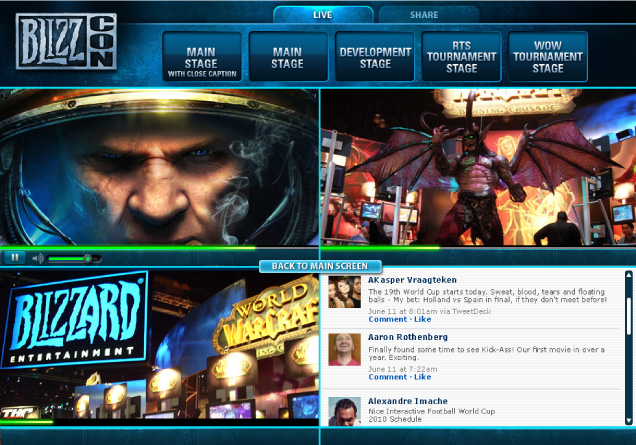
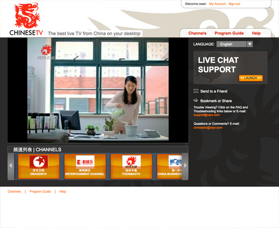
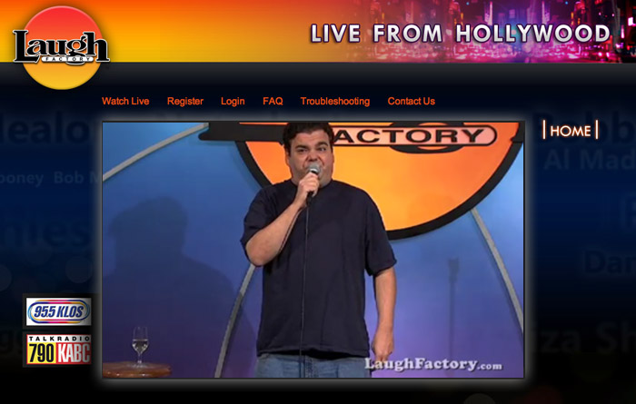
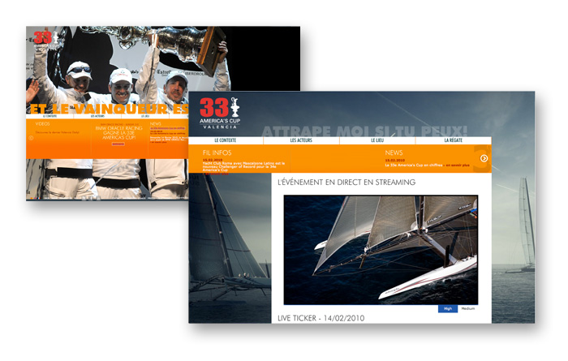
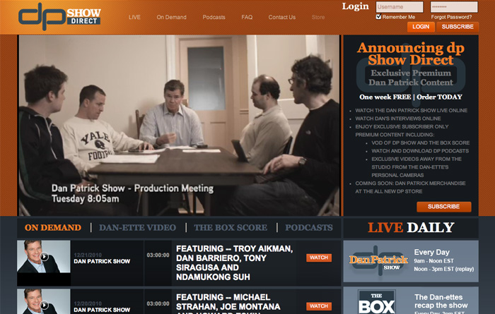
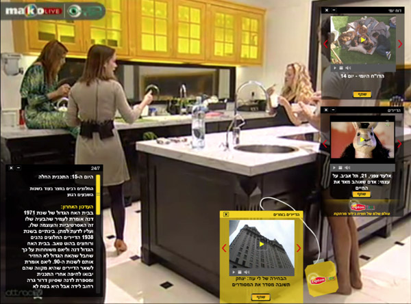

<? 
	$pagetitle = "RayV CloudTV";
	$section = 'solutions';
?>
<?php include '../includes/header.php'; ?>

<?php include '../includes/rcol.php'; ?>
<div id="lcol">
	<div id="lcolinner" class="cloudtv">
		<h1>RayV CloudTV<sup></sup></h1>
		<h3 class="subh1">Welcome to the next generation of TV over IP.</h3>
		<div class="bodycopy">
			<p class="firstp">Launch an unparalleled full TV experience on all three screens, and leverage RayV’s Global HDTV Network to immediately reach your consumers in 140 countries. All without any major investment and ready to launch within days. RayV’s Cloud TV provides a turnkey solution from ingestion to HDTV streaming to all devices.</p>
		</div>
		<div class="bodycopy cloudcopy" style="background: url('/images/cloudtv-devices.png') right 66px no-repeat">
			<h2>3-screens – TV Anywhere Anytime</h2>
			<p class="firstp"><strong>Web</strong> - Full interactive web experience including HD streaming with integrated packaging, content and user management.</p>
			<p class="firstp"><strong>Mobile</strong> - Custom iPad, iPhone and Android applications including live channels, EPG and favorites tabs.</p>
			<p class="firstp"><strong>TV</strong> - A range of Set-top boxes ready to go for Over-The-Top broadcasting, fully integrated with all the other screens.</p>
			<p class="firstp">All the applications are fully customizable to meet your branding needs.</p>
			<a href="ecosystem/player.html" class="readmore">Read more about the RayV Player</a>
		</div>
		<div class="bodycopy cloudcopy" style="background: url('/images/cloudtv-dashboard.png') right 22px no-repeat">
			<h2>RayV Dashboard – All-in-one Management Tool</h2>
			<p class="firstp">A Web-based back-office that allows you to manage your TV offering from one single powerful tool including packaging, user management,  geo restrictions, syndication and real-time reporting and analytics.</p>
			<a href="ecosystem/dashboard.html" class="readmore">Read more about the RayV Dashboard</a>
		</div>
		<div class="bodycopy cloudcopy" style="background: url('/images/cloudtv-map.png') right 56px no-repeat">
			<h2>RayV HDTV Network – The Power of a Global Network</h2>
			<p class="firstp">The RayV Grid is the worlds first Telco grade HDTV Delivery Network over IP. Designed specifically to serve the world’s most sophisticated content providers, we stream for telco’s and networks tens of millions of hours of HDTV every month to millions of viewers in  150 countries. RayV operates the most robust, scalable and secure network for delivering high quality video on the web.</p>
			<a href="ecosystem/grid.html" class="readmore">Read more about the RayV Grid</a>
		</div>
		<div class="bodycopy">
			<h2>RayV Expert Services</h2>
			<p class="firstp">RayV Expert Services offers start-to-finish consulting, strategy, training and customization services to bring your vision to life in the shortest time possible. In addition RayV provides 24/7 support and monitoring services.</p>
			<a href="services/expertservices.html" class="readmore">Read more about the our Expert Services</a>
		</div>
		<div class="bodycopy">
			<h2>RayV Cloud TV Packages</h2> 
			<p class="firstp">RayV Cloud TV provides a tailored solution to your specific needs. From the selection of devices to the number of users, grow the business at your pace.</p>
			<p class="firstp">RayV Cloud TV packages include:</p>
			
			<table border="0" cellpadding="0" cellspacing="0" width="750" class="bodytable" id="cloudtable">
				<tr>
					<th></th>
					<th><h3>RayV Mobility</h3><p>Cloud TV on mobile, Smart Phones and Tablets</p></th>
					<th><h3>RayV Online</h3><p>Cloud TV for  PC/Mac and mobile devices</p></th>
					<th><h3>RayV Advantage</h3><p>Cloud TV for all devices: PC/Mac, Mobile, STB, connected TV’s</p></th>
				</tr>
				<tr class="tdshade">   
					<td class="firstcol"><p>RayV HDX 4500 Encoders</p></td>
					<td class="tdmeat">&bull;</td>
					<td class="tdmeat">&bull;</td>
					<td class="tdmeat">&bull;</td>
				</tr>
				<tr>
					<td class="firstcol"><p>RayV HD Global Delivery network</p></td>
					<td class="tdmeat">&bull;</td>
					<td class="tdmeat">&bull;</td>
					<td class="tdmeat">&bull;</td>
				</tr>
				<tr class="tdshade">
					<td class="firstcol"><p>RayV Customized Mobile and Tablet App</p></td>
					<td class="tdmeat">&bull;</td>
					<td class="tdmeat">&bull;</td>
					<td class="tdmeat">&bull;</td>
				</tr>
				<tr>
					<td class="firstcol"><p>RayV PC App/Player</p></td>
					<td class="tdmeat"></td>
					<td class="tdmeat">&bull;</td>
					<td class="tdmeat">&bull;</td>
				</tr>
				<tr class="tdshade">
					<td class="firstcol"><p>RayV Set Top Box</p></td>
					<td class="tdmeat"></td>
					<td class="tdmeat"></td>
					<td class="tdmeat">&bull;</td>
				</tr>
				<tr>
					<td class="firstcol"><p>RayV Dashboard</p></td>
					<td class="tdmeat">&bull;</td>
					<td class="tdmeat">&bull;</td>
					<td class="tdmeat">&bull;</td>
				</tr>
				<tr class="tdshade">
					<td class="firstcol"><p>RayV Real Time Reporting</p></td>
					<td class="tdmeat">&bull;</td>
					<td class="tdmeat">&bull;</td>
					<td class="tdmeat">&bull;</td>
				</tr>
				<tr>
					<td class="firstcol"><p>RayV Monitoring and support services(*)</p></td>
					<td class="tdmeat">&bull;</td>
					<td class="tdmeat">&bull;</td>
					<td class="tdmeat">&bull;</td>
				</tr>
				<tr class="tdshade">
					<td class="firstcol"><p>RayV Pro Services</p></td>
					<td class=""><span class="atrequest">At request</span></td>
					<td class=""><span class="atrequest">At request</span></td>
					<td class=""><span class="atrequest">At request</span></td>
				</tr>
			</table>
			<p>*RayV provides three levels of support including silver, gold and elite (please see our <a href="/services/customersupport.html">customer support page</a> for more details). All basic packages include the silver support package.</p>
			<!--<h2>Secure Streaming</h2>
			<p class="firstp">As the preferred partner of some of the top tier broadcasters worldwide, RayV is extremely sensitive about content protection. The RayV HD Delivery Network practices safe streaming by providing a generic integration with all the major DRM providers.  The RayV Dashboard will provide the ability to create and control in real time a wide set of distribution strategies including blackouts, geo-fencing, in-stream advertising and more.</p>
			<h2>Quick, Easy &amp; Cost Effective</h2>
			<p class="firstp">CloudTV<sup></sup> is the ONLY solution that allows you to launch a full HDTV offering to millions of people without the huge CAPEX and OPEX investments needed in parallel solutions.</p>
			<p class="firstp">CloudTV<sup></sup> is offered as an entire end-to-end solution or as individual elements designed to fit your modular needs. </p>
			<p class="firstp">CloudTV<sup></sup> is designed to take you to the market:</p>
			<ul class="childlist">
				<li><strong>QUICKLY</strong> – go live within a day.</li>
				<li><strong>EASILY</strong> – One centralized place to manage all your Video over IP activities</li>
				<li><strong>COST EFFECTIVELY</strong> – Owning the entire Value chain creates huge cost savings (see our pricing)</li>
				<li><strong>GENERATING REVENUES IMMEDIATELY</strong> – Extending your offering and footprint without cannibalizing your existing relationships, while implementing the business model of your choice</li>
			</ul>
			<h2>RayV's CloudTV<sup></sup> Solution Includes:</h2>
			<p class="firstp"><strong>RayV Global HDTV network</strong> – CloudTV<sup></sup> includes using the RayV HDTV Global Delivery Network. With over 30 points around the world, you can immediately stream HDTV to millions of users around the globe. <a href="ecosystem/grid.html">(learn more)</a></p>
			<p class="firstp"><strong>Streaming to all devices and screens</strong> – Using the RayV Grid, you will be able to stream worldwide to a wide set of IP connected devices including:</a></p>
			<ul class="childlist">
				<li>PC / Mac / Linux based PCs</li>
				<li>Mobile devices – iPhone / Android / RIM / others</li>
				<li>Tablets – iOS iPad / Android based devices</li>
				<li>Game Consoles</li>
				<li>Connected TVs</li>
				<li>Set Top boxes – generic or proprietary.</li>
			</ul>
			<p class="firstp"><strong>RayV Products</strong> – All the RayV products including the RayV HDX Encoders, the RayV Players for all devices and the RayV Dashboard reporting and monetization tools are seamlessly integrated and easily unbundled for your specific streaming needs.</p>
			<p class="firstp"><strong>RayV Pro Broadcasting and Encoding Services</strong> – No need to buy expensive encoders or teleporting services. RayV’s HDX Encoders support both live broadcasting from anywhere in the world to heavy duty linear channels from head end offices. RayV’s Broadcast Ops team will support on site installation and customization of the encoders and will setup the IP broadcasting infrastructure, including training and customization of the RayV Toolset <a href="ecosystem/broadcaster.html">(click here to learn more about RayV HDX Encoders)</a></p>
			<p class="firstp"><strong>Unique Customized Consumer Experience</strong></p>
			<ul class="lcolbullets childlist">
				<li>Full customization of the user experience to all three screens – TV, PC/Mac, and Mobile. <a href="ecosystem/player.html">(learn more about the RayV player).</a></li>
				<li>Set up on the online experience including a registration and payment module.</li>
				<li>Content management system for live and VOD streaming. <a href="ecosystem/dashboard.html">(learn more about RayV Dashboard)</a></li>
			</ul>
			<p class="firstp"><strong>Real Time Reporting and analytics</strong> – RayV CAP (Customer Analytics Portal) provides real time monitoring and reporting including real time rating, minutes watched, concurrent usage, number of viewers, data consumed and all the other points of data that will help you better manage your offering in real-time. (think Nielsen just real-time)</p>
			<p class="firstp"><strong>Monetization:</strong></p>
			<ul class="childlist">
				<li>Using the RayV Dashboard, set all the offering parameters including Geo-targeting, quality of streams, and availability depending on the rights acquired.</li>
				<li>Real-time creation and management of affiliate and syndicate partnerships.</li>
				<li>Business models implementation including Pay-per-view, Subscription and ad supported stream.</li>
				<li>Integrated advertising platform with the ad network of your choice (pre-, mid- and post-roll)</li>
			</ul>
			<p class="firstp"><strong>24/7/365 live support for consumers</strong> – The RayV 24/7 monitoring and support team provides a service of real time support to end users via chat and email ( learn more)</p>
			<p class="firstp"><strong>24/7/365 live technical support for your production and technical team.</strong></p>
			<div id="productscroll">
				<h2>Examples:</h2>
				<div class="scrollable" id="productscrollable">   
					<div class="items">
						<div class="scrollitem">
							<div class="scrollimg"></div>
							<p><strong>Blizzcon 2010</strong> – One of the largest online Pay Per View broadcasts with over 100 million minutes of HD streaming in 150 Countries over a single weekend. <a href="partnersandclients/casestudies.html?0">Learn more</a></p>
						</div>
						<div class="scrollitem">
							<div class="scrollimg"></div>
							<p><strong>Chinese TV</strong> – Together with Shanghai Media Group (the second largest telco in China), ChineseTV provides the best bundle of original Chinese content to expats living abroad.</p>
						</div>
						<div class="scrollitem">
							<div class="scrollimg"></div>
							<p><strong>Laugh Factory</strong> – The world’s most famous comedy club broadcasting live online stand-up in HD from its clubs to fans around the world.</p>
						</div>
						<div class="scrollitem">
							<div class="scrollimg"></div>
							<p><strong>America's Cup</strong> – Live broadcast of the 33rd America's cup <a href="partnersandclients/casestudies.html?4">Learn more</a></p>
						</div>
						<div class="scrollitem">
							<div class="scrollimg"></div>
							<p><strong>Dan Patrick</strong> – Dan Patrick’s Daily TV show broadcasting daily in parallel on the 101 (DirecTV) channel and online as an added value service. <a href="partnersandclients/casestudies.html?5">Learn more</a></p>
						</div>
						<div class="scrollitem">
							<div class="scrollimg"></div>
							<p><strong>Mako Live/ Big Brother</strong> – Five cameras broadcasting live 24/7 action from the Big Brother house with a wealth of interactive features, all as part of the “Big Brother” show.</p>
						</div>
					</div>
				</div>
				<div id="prodscrollnav">
					<div id="prodscrollnavinner">
						<a class="next browse right ir" onselectstart="return false;">&larr;</a>
						<div class="navi">
							<a href="#0" class="active"></a>
							<a href="#1" class=""></a>
							<a href="#2" class=""></a>
							<a href="#3" class=""></a>
							<a href="#4" class=""></a>
							<a href="#5" class=""></a>
						</div>
						<a class="prev browse left ir" onselectstart="return false;">&rarr;</a>
						<br clear="all">
					</div>
				</div>
			</div>-->
		</div>
		
	</div>
</div>
<?php include '../includes/footer.php'; ?>
